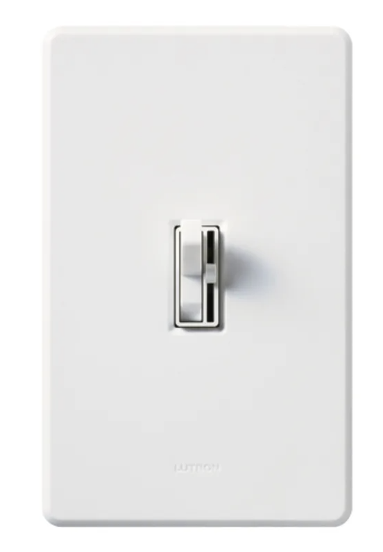

THE MEDIUM IS THE MASSAGE
THE MEDIUM IS THE MESSAGE

"...and who are you?
"I —I hardly know, sir, just at present—at least I know who I was when I got up this morning, but I think I must have been changed several times since then."
Print technology created the public. Electric technology created the mass. The public consists of separate individuals walking around with separate, fixed points of view. The new technology demands 69 that we abandon the luxury of this posture, this fragmentary outlook.
Printing, a ditto device. Printing, a ditto device. Printing, a ditto device. Printing, a ditto device. Printing, a ditto device. Printing, a ditto device. Printing, a ditto device. Printing, a ditto device.
Printing, a ditto device. Printing, a ditto device. Printing, a ditto device. Printing, a ditto device. Printing, a ditto device. Printing, a ditto device. Printing, a ditto device. Printing, a ditto device.
Printing, a ditto device. Printing, a ditto device. Printing, a ditto device. Printing, a ditto device. Printing, a ditto device. Printing, a ditto device. Printing, a ditto device. Printing, a ditto device.
Printing, a ditto device. Printing, a ditto device. Printing, a ditto device. Printing, a ditto device. Printing, a ditto device. Printing, a ditto device.
“the others”
We have become irrevocably involved with, and responsible for, each other.
you
your family
your neighborhood
your education
your job
your government